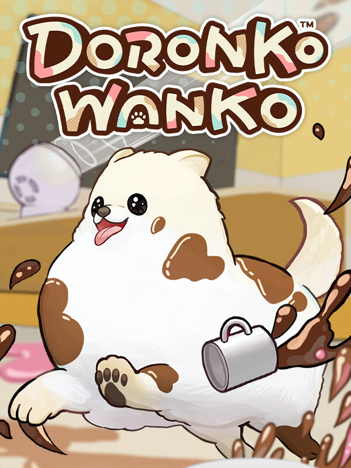

DoronkoWanko
DoronkoWanko
Detalhes
 |
|
| Tempo de jogo | Não Jogado |
| Última Atividade | Nunca |
| Adicionado | 07/06/2026 0:35:52 |
| Modificado | 07/06/2026 2:36:20 |
| Status de Conclusão | Not Played |
| Biblioteca | Steam |
| Fonte | Steam |
| Plataforma | PC (Windows) |
| Data de Lançamento | 26/03/2024 |
| Pontuação da Comunidade | 70 |
| Avaliação da crítica | |
| Pontuação do Usuário | |
| Gênero | Simulator |
| Desenvolvedor | Bandai Namco Online Bandai Namco Studios |
| Editor | Phoenixx Inc. |
| Funções | Single Player |
| Links | Steam Nintendo |
| Tag | |
Descrição
『DORONKO WANKO』 is a DORONKO Action Game.
In this game, you can become a cute, innocent pomeranian.
And you can make your master's home messy and dirty.
Let's explore this beautiful house and make it dirty and muddy at will!


Pomeranian can get muddy by "rubbing" against the "mud" spread on the floor.
Spread out the mud with "splash"!
Let's make the whole area muddy and messy.


Sometimes you can find "hidden pome" when you are spreading mud all over the house.
When you find all the "hidden pome", the "Good Smell Room" 's door will open.
(Let's go inside quietly before others notice!)


More mud, more damage!
You can check the total amount of damage you have caused from the ending “Receipt”.


When you cause enough damage, you will receive a “gift”?!
They will help Pome’s exploration by making it easier to splash mud and obtain key items.


A little action can cause a huge damage?
Use personal appliances and toys to get even muddier.


The Pomeranian's adventures will remain as a "badge of memory".
A random move may get an unexpected badge.


"Put on" the "Goods" and make your Pomeranian more pretty.
Don't forget the special goods that can release mud!
In this game, you can become a cute, innocent pomeranian.
And you can make your master's home messy and dirty.
Let's explore this beautiful house and make it dirty and muddy at will!
Pomeranian can get muddy by "rubbing" against the "mud" spread on the floor.
Spread out the mud with "splash"!
Let's make the whole area muddy and messy.
Sometimes you can find "hidden pome" when you are spreading mud all over the house.
When you find all the "hidden pome", the "Good Smell Room" 's door will open.
(Let's go inside quietly before others notice!)
More mud, more damage!
You can check the total amount of damage you have caused from the ending “Receipt”.
When you cause enough damage, you will receive a “gift”?!
They will help Pome’s exploration by making it easier to splash mud and obtain key items.
A little action can cause a huge damage?
Use personal appliances and toys to get even muddier.
The Pomeranian's adventures will remain as a "badge of memory".
A random move may get an unexpected badge.
"Put on" the "Goods" and make your Pomeranian more pretty.
Don't forget the special goods that can release mud!